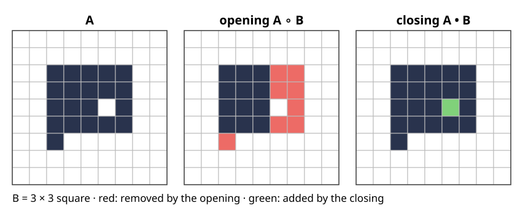
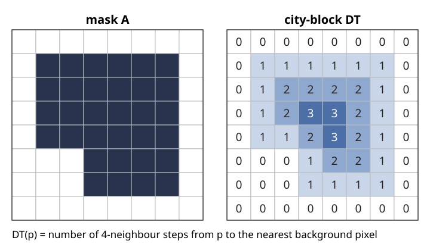

Last unit: erosion (where the SE fits) and dilation (where it hits). Erosion removes small things but shrinks everything; dilation fills small gaps but grows everything. Combined, they filter by size and shape without changing what is large enough.
Opening = erode, then dilate: removes what the SE does not fit into. Closing = the same for the background.
Their properties: increasing, idempotent (like a projection), dual.
Granulometry: openings with growing discs measure a size distribution without segmenting a single object.
The distance transform: distance from each object pixel to the background. Erosion by a disc of radius r is a single threshold of it.
Slides titled The math give the formulas and proofs; the ideas are complete without them.
Opening: roll the SE around inside
A \circ B = (A \ominus B) \oplus B .
The erosion keeps the positions where B fits; the dilation puts a copy of B back on each of them.
So the opening is the union of all copies of B that fit inside A: roll the SE around inside the object, keep every pixel it can reach.
What it removes: specks, thin protrusions and bridges, corners sharper than B. What it keeps: everything B fits into, unchanged.

A 9 \times 9 image opened and closed by the 3 \times 3 square. Red: removed by the opening; green: added by the closing.
Closing: roll the SE around outside
A \bullet B = (A \oplus B) \ominus B .
The same for the background: roll B around outside the object; every pixel it cannot reach becomes object.
What it fills: holes, gaps and narrow bays smaller than B. The rest of the outline stays where it was.
In the figure: the opening (20 → 12 pixels) removes the protrusion at the bottom and the two-pixel-wide part next to the hole; the closing (20 → 21) fills the hole and keeps everything else.
Properties
opening A \circ B
closing A \bullet B
compared with A
\subseteq A (removes only)
\supseteq A (adds only)
bigger input
bigger output (increasing)
bigger output
applied twice
no change: (A \circ B) \circ B = A \circ B
no change
duality
(A \circ B)^c = A^c \bullet \check B
Idempotent like a projection, P^2 = P: once every remaining part is a union of fitting copies of B, opening again finds the same copies.
Increasing + idempotent + only removes: such a filter is called an “opening” in general (an algebraic opening).
The math: why the opening is idempotent
A \circ B = \bigcup\{B_z : B_z \subseteq A\}: if x \in (A \ominus B) \oplus B then x = z + b with B_z \subseteq A, so x \in B_z; conversely every fitting B_z lies in the dilation of its own origin z \in A \ominus B.
Anti-extensive: a union of subsets of A is a subset of A.
Idempotent: every B_z \subseteq A also satisfies B_z \subseteq A \circ B (it is one of the sets in the union). So the fitting copies of B in A \circ B are the same as in A, and the union is the same.
Duality: (A \circ B)^c = \big((A \ominus B) \oplus B\big)^c = (A \ominus B)^c \ominus \check B = (A^c \oplus \check B) \ominus \check B = A^c \bullet \check B, using the erosion–dilation duality twice.
At the image border the properties need the adjoint pair: dilation ignores the outside, erosion treats it as object (the demo’s “ignored”).
Noise removal and what it costs
Opening removes bright specks (object pixels) smaller than B; closing fills dark holes smaller than B. A noisy mask has both: open, then close (or the other way).
Open-then-close ≠ close-then-open: a speck next to an object may be joined by the closing first and then survive the opening. Repeating with growing SEs (“alternating sequential filters”) treats both kinds of noise more evenly.
What is lost: corners are rounded (to the shape of B), thin necks are cut by the opening, thin gaps between two objects are bridged by the closing.
The SE size sets the scale: “noise” is whatever is smaller than B.
Try it: opening and closing
Size filtering and granulometry
Open with discs of growing radius r. Each opening is contained in the previous one: what a disc of radius r + 1 fits into, a disc of radius r fits into too.
The area lefta(r) = |A \circ D_r| falls from |A| to 0: a cumulative size distribution.
The pattern spectruma(r) - a(r + 1) counts the pixels that disappear between r and r + 1: a histogram of sizes, without segmenting or counting any object.
“Size” here = the radius of the largest disc that fits. A long thin object counts as small; two touching discs do not make one bigger object.
A line SE measures size in one direction only: openings with a horizontal line keep long horizontal structures (an orientation filter).
The math: granulometry
A family of openings \gamma_r is a granulometry if \gamma_r \gamma_s = \gamma_s \gamma_r = \gamma_{\max(r, s)}: the larger one wins.
For openings by B_r this holds when every B_s (s \ge r) is a union of translates of B_r, i.e. B_s \circ B_r = B_s. True for squares, diamonds, lines and Euclidean discs; digital discs only approximately, so in practice one uses the union of the openings by all discs of radius \ge r.
Then a(r) = |\gamma_r(A)| is non-increasing, a(0) = |A|, and the pattern spectrum \mathrm{PS}(r) = a(r) - a(r + 1) \ge 0 sums to |A|.
Each pixel p has a sizes(p) = \max\{r : p \in \gamma_r(A)\} (the “opening function”); \mathrm{PS}(r) = |\{p : s(p) = r\}|.
Try it: granulometry
The distance transform
For every object pixel p: the distance to the nearest background pixel,
\mathrm{DT}(p) = \min_{q \notin A} \|p - q\| \qquad (0 \text{ on the background}).

A mask and its city-block distance transform.
Picture it as a mountain over the object: low at the edge, high in the middle, with ridges along the centre lines.
The metric matters: city-block (steps to 4-neighbours), chessboard (8-neighbours), chamfer (weights 3 and 4 for straight and diagonal steps, \approx Euclidean), exact Euclidean.
By hand: count the steps outwards, ring by ring.
The math: two passes are enough
City-block DT by two raster scans, each “minimum over neighbours plus one step”:
Set d = 0 on the background, \infty on the object.
Why it works: after the forward pass, d(r) is the distance to the nearest background pixel above and to the left of r (paths of right and down steps). The backward pass then adds paths of left and up steps from such an r. Any background pixel q is reached through the corner pixel r in p’s row and q’s column (or p’s column and q’s row) chosen so that q is above-left of r and r below-right of p, with total length |\Delta x| + |\Delta y|.
Chessboard and chamfer: the same scheme with the diagonal neighbours (step weights 1, or 3 and 4).
The exact Euclidean DT is computed in linear time, separably: one 1D pass per column, then a lower envelope of parabolas per row (Felzenszwalb–Huttenlocher); not derived here.
Try it: the two-pass distance transform
Erosion by a disc = a threshold of the DT
A \ominus D_r = \{x : \mathrm{DT}(x) > r\}, \qquad A \oplus D_r = \{x : \mathrm{DT}_{A^c}(x) \le r\}
with D_r the disc of radius r and \mathrm{DT}_{A^c} the distance to A (the DT of the background).
The disc fits at x exactly when no background pixel is within distance r of x.
One DT gives the erosion by every radius; an opening by any disc is two distance transforms. Fast for large SEs.
Matching metrics: city-block DT ↔︎ diamond (the cross dilated by itself), chessboard DT ↔︎ square.
Level sets (elective): the boundary of A \oplus D_r is the outline moved outwards at unit speed for a time r, the zero level of the signed distance shifted by r.
The math: the threshold identity
x \in A \ominus D_r \iff x + b \in A for all \|b\| \le r\iff no q \notin A with \|q - x\| \le r\iff \min_{q \notin A}\|q - x\| > r \iff \mathrm{DT}(x) > r.
For dilation, by duality: (A \oplus D_r)^c = A^c \ominus D_r = \{x : \mathrm{DT}_{A^c}(x) > r\}, since D_r is symmetric (\check D_r = D_r).
The same argument works for any norm and its “disc”: city-block (|\Delta x| + |\Delta y| \le r, a diamond), chessboard (\max(|\Delta x|, |\Delta y|) \le r, a square). Pixels outside the image: the DT only sees background inside the image, which corresponds to erosion with the outside “ignored”.
Pointers
Skeletons (elective “Objects”): the centres of the largest discs that fit inside A lie on the ridges of the DT; they form the skeleton (medial axis). Hit-or-miss, thinning and skeletons are taught there.
Watershed (day 10): the DT of a mask of touching round cells has one peak per cell; flooding it splits them. Fill holes first (the reconstruction unit of this day).
Graph cuts (day 13): an opening/closing cleans a noisy threshold locally and cheaply, by size alone. A graph cut adds a smoothness term \lambda \cdot(boundary length) to an energy and finds the global best labelling; it uses the image values too, not only the mask.
Summary
OpeningA \circ B = erode, then dilate = union of all copies of B inside A; removes what is smaller than B. Closing = the same for the background; fills what is smaller than B.
Both are increasing and idempotent; opening only removes, closing only adds; they are dual. Open-then-close ≠ close-then-open.
Granulometry: the area left after openings with growing discs, and its differences, the pattern spectrum: a size histogram without segmentation.
Distance transform\mathrm{DT}(p): distance to the background; two raster passes for city-block, chessboard and chamfer, linear time for exact Euclidean.
Erosion by a disc of radius r = \{\mathrm{DT} > r\}.